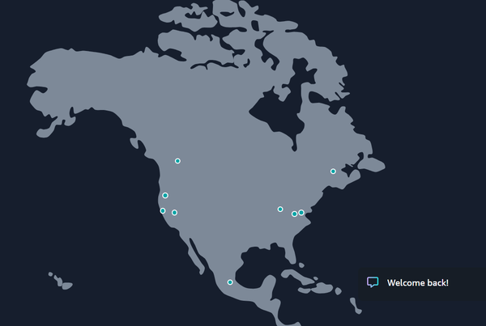

A global application is one that’s deployed across multiple geographic locations. In AWS, this typically means leveraging multiple AWS Regions, Availability Zones, and Edge Locations. The main benefit of this setup is that users will experience less delay when interacting with your application. Because of the sheer size of the planet, a user in India accessing a server in the United States will experience noticeable lag. But if your application is deployed closer to where your users are—say, in both the US and Asia—then everyone benefits from faster, more responsive performance.
Another major reason to go global is disaster recovery. You may not want to rely solely on a single AWS Region. While AWS is highly reliable, disasters like earthquakes, power outages, or political instability can impact a Region. Deploying your application across multiple Regions enhances resilience by enabling failover if one Region goes down. To make this seamless, however, you need to configure replication (such as S3 Cross-Region Replication), implement solid backup strategies, and use services like Amazon Route 53 for DNS failover. This layered approach ensures redundancy, maximizes uptime, and keeps your applications highly available even during Regional disruptions.
Finally, distributing your application globally can also strengthen defenses against cyberattacks. Threats like DDoS attacks are unfortunately common, but spreading infrastructure across multiple Regions makes it much harder for attackers to disrupt your entire system. With services such as AWS Shield providing DDoS protection and AWS Global Accelerator enabling intelligent traffic rerouting, you gain additional resilience. Pairing this with other security measures—like AWS WAF for filtering malicious requests and IAM for access control—further ensures that your application remains secure, reliable, and available worldwide.
In this chapter, we’ll look at the AWS global infrastructure. We’ll look at how data centers, Regions, Availability Zones, and Edge Locations work. We’ll also look at the various AWS services, such as CloudFront, as well as deployment options. All of these are common topics on the exam.
At the core of any cloud platform lies the data center. It’s the physical foundation behind all the powerful services we associate with the cloud. This is where you’ll find the hardware like servers, storage units, networking gear, and other critical equipment. This is all housed in a dedicated facility.
The data center industry is massive. In the United States alone, there are more than 5,300 data centers, making it the global leader. Worldwide, that number climbs to nearly 12,000.
Most data centers share a common set of features:
These are the frameworks for organizing servers, networking hardware, and storage. A standard rack measures 19 inches wide, and they are arranged in rows, which are usually enclosed in cabinets. Smart layout design here matters. This improves cooling efficiency and makes maintenance easier.
Power and data flow through a dense network of cables, typically routed through ceilings or under raised floors. Managing this web of connections is critical for keeping the system running smoothly.
Data centers rely on backup generators and uninterruptible power supplies (UPSs). These are usually powered by diesel so as to keep operations going even during outages.
All the hardware in a data center generates considerable heat. Systems to regulate temperature and humidity are important to prevent overheating and maintain optimal performance.
Fires can spread fast in a data center. This is why these facilities are equipped with smoke detectors, heat sensors, and suppression systems like sprinklers to catch problems early and minimize damage.
To protect against unauthorized access, data centers use a mix of surveillance cameras, fencing, biometric scanners, and secure login systems.
With all these systems in place, the cost of building and maintaining a data center adds up quickly. For example, in the US, the price to build one typically ranges between $7 million and $12 million per megawatt (MW) of capacity. In Europe, the cost runs a bit higher—between $8 million and $14 million per MW. This is mainly due to stricter environmental regulations. In developing Regions, the price tends to range between $4 million and $7 million per MW.
Operating costs come next, and energy is by far the largest expense. It often eats up 30% to 60% of a facility’s ongoing budget. Location plays a big role in how high the energy bill gets. Factors like access to cheap power sources and climate conditions matter a lot. For this reason, cloud companies often build their data centers near low-cost energy sources. Apple, for example, located one of its facilities in Foulum, Denmark, to take advantage of nearby hydroelectric power from Norway.
Not all data centers are built on the same scale. Some are compact and serve niche purposes, while others are massive and built for enterprise-level workloads. A typical cloud provider’s data center might span about 100,000 square meters.
Then there are the giants.
Take Meta’s project in Richland Parish, Louisiana: a planned four-million-square-foot data center with an estimated construction cost of $10 billion. Once it’s up and running—targeted for 2030—it’ll support about 500 employees. On top of that, Meta is investing $200 million to upgrade local roads and water infrastructure. For energy, the company has partnered with Entergy Louisiana, which will build new power generation systems to support the facility.
Other tech giants are racing to build their own mega-scale data centers as well—Microsoft, Apple, Oracle, and Amazon are all in the mix. This growth is pushing demand for electricity sharply upward.
In fact, the Electric Power Research Institute predicts that by 2030, data centers could consume up to 9% of the US’s total electricity—more than double today’s levels.
This rapid growth presents a major challenge. The current power grid wasn’t designed for such high loads from modern data centers. Upgrading the grid to handle this demand will be both costly and time-consuming.
Renewable energy sources like wind and solar are promising but unreliable due to their intermittent nature. Plus, there’s the regulatory maze that slows down approvals for new energy projects.
In response to growing energy demands and the limitations of traditional and renewable power sources, several major tech companies are turning to nuclear energy as a viable solution. Amazon, for instance, acquired a 960-MW data center in March 2024 that draws its power directly from the Susquehanna nuclear facility in Pennsylvania. Meanwhile, Google announced a partnership with Kairos Power in October 2024 to develop small modular reactors (SMRs), with a goal of generating up to 500 MW of carbon-free electricity by 2035.
Nuclear power offers clear benefits. It’s carbon-free and capable of providing steady energy at scale. But it also comes with serious risks. Accidents can be catastrophic, and new plants are extremely expensive and slow to build.
Still, as demand for cloud services keeps rising, and as workloads like AI place even greater strain on infrastructure, the need for reliable, scalable energy solutions isn’t going away.
AWS builds its global infrastructure around the concept of Regions, which are geographically distinct areas that each contain multiple Availability Zones, or AZs. These AZs function as independent data centers but are designed to work together. Every Region includes at least two AZs, all linked by high-speed, low-latency networking. This setup allows for rapid, synchronous data replication and supports robust, fault-tolerant architectures that can keep running even in the face of service disruptions or disasters.
One of the biggest strengths of this approach is Regional isolation. Each Region runs independently, so if a natural disaster, technical glitch, or political event affects one Region, the others remain untouched. Within a single Region, AZs are physically spread out to reduce the chance of a single incident taking down multiple zones. This physical separation helps maintain service continuity even during localized failures.
Each AZ comes equipped with its own power backup systems, including UPSs and generators, and draws electricity from different substations and grids. This design eliminates shared points of failure in power delivery. On the networking side, AZs connect using fully redundant, high-bandwidth fiber, and each one hooks into multiple Tier 1 transit providers. AWS also rolls out updates one zone at a time, which lowers the risk of system-wide issues.
Currently, AWS operates 39 Regions worldwide, spanning 123 Availability Zones. Figure 8-1 shows those for North America.
And they’re still growing. New Regions are already in the pipeline, including locations in New Zealand, Saudi Arabia, and Chile, and a Sovereign EU Region, along with 13 additional AZs.
North America is home to nine AWS Regions, spanning the United States, Canada, and—since early 2025—Mexico. Besides these, there are the AWS GovCloud (US) Regions. They are specialized, isolated environments built to host sensitive data and regulated workloads for US government agencies, defense contractors, and organizations in highly regulated industries. These Regions are physically and logically separate from standard AWS commercial Regions. This provides an added layer of security and compliance.

GovCloud supports strict regulatory requirements, including FedRAMP High, the most rigorous level of FedRAMP authorization, International Traffic in Arms Regulations (ITAR), and Department of Defense standards. This makes it suitable for handling Controlled Unclassified Information and other mission-critical workloads. Collectively, these Regions include 31 AZs. Table 8-1 shows the details.
| Region name | Code | AZ | Launch year |
|---|---|---|---|
|
US East (Northern Virginia) |
us-east-1 |
6 |
2006 |
|
US East (Ohio) |
us-east-2 |
3 |
2016 |
|
US West (Oregon) |
us-west-2 |
4 |
2011 |
|
US West (Northern California) |
us-west-1 |
3 |
2009 |
|
Canada (Central) |
ca-central-1 |
3 |
2016 |
|
AWS GovCloud (US-West) |
us-gov-west-1 |
3 |
2011 |
|
AWS GovCloud (US-East) |
us-gov-east-1 |
3 |
2018 |
|
US West (Arizona) |
us-west-3 |
3 |
2023 |
|
Mexico (Central) |
mx-central-1 |
3 |
2025 |
Whenever you work with AWS—whether through the CLI, SDKs, or infrastructure-as-code tools like CloudFormation or Terraform—you’ll need to specify Regions using their official codes (such as those listed in Table 8-1 for North America and Table 8-2 for some of the other global Regions). These codes follow a standardized naming convention, and they’re essential for telling AWS where to create or manage your resources.
Table 8-2 shows some of the popular codes for foreign markets.
| Region | Code |
|---|---|
|
Europe (Ireland) |
eu-west-1 |
|
Europe (Frankfurt) |
eu-central-1 |
|
Asia Pacific (Tokyo) |
ap-northeast-1 |
|
Asia Pacific (Seoul) |
ap-northeast-2 |
|
Asia Pacific (Mumbai) |
ap-south-1 |
|
Asia Pacific (Singapore) |
ap-southeast-1 |
|
Asia Pacific (Sydney) |
ap-southeast-2 |
|
Africa (Cape Town) |
af-south-1 |
|
Middle East (Bahrain) |
me-south-1 |
Picking the right AWS Region is a strategic move that directly impacts how your applications perform, how much you’ll pay, whether you meet regulatory requirements, and which AWS services you can actually use. To make the best choice, it helps to evaluate your needs across four key areas:
Some industries and countries require certain data to remain within specific geographic boundaries. AWS supports these mandates through a broad selection of global Regions, dedicated Local Zones, and specialized offerings like the European Sovereign Cloud. To ensure compliance, review relevant laws such as GDPR or UK GDPR, along with your organization’s internal policies. AWS tools like Control Tower and CloudHSM can further support compliance and control over data residency.
Latency can make or break the user experience. Again, deploying your infrastructure in Regions close to your users helps reduce round-trip time. For broader reach, services like CloudFront and Global Accelerator intelligently route traffic to the nearest available endpoint.
Not every AWS service is available in every Region. Major Regions usually receive new features first. Before choosing a Region, consult the AWS Services List to verify that the capabilities you need are available. If they’re not, you may need to architect around it or delay implementation until AWS expands support.
AWS pricing varies significantly between Regions. For example, workloads in São Paulo can cost 50–70% more than the same setup in Northern Virginia. Use tools like the AWS Pricing Calculator or the Price List API to estimate expenses accurately. Also keep in mind that data transfer costs can vary. This is not just between Regions but also between Availability Zones. Inter-AZ transfers are not always free unless you’re using certain services, such as S3 replication or workloads within the same placement group. To optimize costs further, consider Reserved Instances and Savings Plans, and carefully account for data transfer fees if your architecture spans multiple Regions or AZs.
Beyond AWS Regions and Availability Zones, there’s another key layer in the AWS global infrastructure that helps speed things up: Points of Presence (PoPs). These are physical sites that host Edge Locations and regional edge caches. They are strategically placed in major cities and densely populated areas to sit closer to end users. Unlike full AWS Regions, PoPs focus on specialized tasks such as caching content, handling DNS lookups, and defending against DDoS attacks.
AWS has built out a massive global network of PoPs—over 600 as of 2025—spanning more than 90 cities in 45+ countries. This network powers services like Amazon CloudFront, Route 53, AWS Shield, and AWS Global Accelerator, enabling low-latency content delivery, intelligent traffic routing, and stronger protection against threats. Together, these PoPs form the backbone of one of the most extensive content delivery and security systems in the world.
In Chapter 7, we saw how these services operate from a security perspective. Now, let’s shift to how they fit into and benefit from AWS’s broader global infrastructure.
The AWS Global Accelerator helps users around the world connect faster and more reliably, without you needing to do much extra work.
Here’s how it works: Global Accelerator gives you two static IP addresses that don’t change, no matter what. These IPs use a routing method called anycast, which means they’re announced from dozens of AWS Edge Locations. When someone tries to access your application, their request hops onto AWS’s private network from the nearest Edge Location. The private backbone usually beats the public internet in both speed and consistency.
If something goes wrong—like a failure in a Region—the Global Accelerator can shift traffic to a working endpoint in another Region almost instantly. The user won’t notice anything and there will be no DNS changes.
Amazon Route 53 manages DNS operations from the edge. It operates on a global anycast network and uses over 200 PoPs. When someone tries to resolve a domain like myapp.mydomain.com, the request is routed to the nearest PoP based on real-time network conditions. This minimizes latency and ensures users receive fast, reliable responses no matter where they are.
Route 53 is architected in two layers: a global control plane and a distributed data plane. The control plane lives in one AWS Region and handles tasks like creating or updating DNS records, setting up routing policies, and configuring health checks.
The data plane, on the other hand, is everywhere. It handles the DNS lookups and keeps an eye on endpoint health across PoPs, Regions, and Edge Locations. Even if the control plane goes offline temporarily, the data plane keeps running—resolving DNS queries and routing traffic as needed.
CloudFront runs on a layered system that includes Edge Locations, Regional Edge Caches (RECs), and AWS’s private global backbone.
Here’s how it works: when someone requests a file—maybe a video, image, or web page—CloudFront starts by checking the nearest Edge Location. If the file’s already cached there, it’s delivered instantly. If not, the request quietly moves up the chain to a REC, which has a much larger cache and holds onto content longer. If this is not enough, then CloudFront pulls the content from your origin server.
This tiered system cuts down on trips to the origin, reduces load on your backend, and speeds things up for users—all with no extra work on your part.
Behind the scenes, CloudFront doesn’t rely on the public internet for these fetches. Its PoPs and RECs connect through AWS’s own high-capacity fiber network—hundreds of terabits of fully redundant, low-latency connections that span AWS Regions and AZs.
AWS Shield is built into the backbone of AWS. The service kicks in at the edge of the network, where it can stop threatening traffic before it gets anywhere near your application.
Every AWS account gets Shield Standard by default. It automatically filters out common DDoS attacks at the Edge Locations, which are the same PoPs used by services like CloudFront, Route 53, and Global Accelerator. When a surge of malicious traffic shows up, Shield Standard blocks it on the spot.
If an application has higher stakes—or you just want more control—Shield Advanced takes things further. It learns traffic patterns and uses custom rules, along with AWS WAF to catch more complex threats at the edge. It provides access to real-time dashboards, detailed flow logs, and support from AWS’s dedicated DDoS Response Team.
AWS Outposts allow for running AWS services in a data center or co-location facility—a third-party data center where companies rent space for their own IT infrastructure. AWS takes care of everything: delivery, setup, and ongoing support.
There are two options for AWS Outposts:
Full-size 42U racks are tall data center cabinets (about 80 inches high), preloaded with servers, storage, networking gear, and redundant power systems. They show up fully assembled and are ready to go.
Compact servers are for tighter spaces like branch offices or factory floors.
Each Outposts rack comes with integrated switches and supports two key network connections:
The service link is an encrypted connection that ties your Outpost to its parent AWS Region. It handles all the control traffic—like provisioning and updates—so AWS can provide centralized management.
The local gateway provides a low-latency bridge between your Outpost and on-site systems, letting your apps talk to local resources without going out to the cloud and back.
Although the hardware sits in your building, it behaves like it’s part of AWS. You use the same console, CLI, and APIs, but get the benefits of low latency, local data processing, and hardware management. If your AWS connection drops, your workloads keep running locally and sync back automatically once you’re reconnected. In addition, AWS offers Direct Connect locations at over 100 global sites. This provides dedicated network connections to AWS Regions or Local Zones. It enables hybrid workloads to benefit from consistent low latency, higher bandwidth, and more reliable connectivity than the public internet alone.
When applications require lower latency and more specialized hardware, AWS has capabilities that go beyond Regions and Edge Locations. This is where Local Zones and Wavelength Zones come in. They are AWS’s way of moving compute and storage even closer to users.
When your users are far from the nearest AWS Region, delays start to creep in. Data takes longer to move, and applications can become sluggish. Local Zones fix this by dropping a smaller slice of AWS—compute, storage, and database power—into major cities. This helps enable ultra-low-latency applications like gaming or real-time analytics.
You start by opting in to a Local Zone and linking it to your existing VPC. From there, you carve out a subnet inside that zone—essentially reserving resources, just like you would in a standard AZ. Once that’s set, you can launch your services—EC2 instances, EBS volumes, RDS databases—in the city. Your application stays connected to the main AWS Region through a fast, secure network, but now your core resources live closer to the action.
However, Local Zones aren’t full-blown AWS Regions. They offer fewer service types and less hardware variety, and there’s less built-in redundancy. So it’s smart to have a backup plan—say, rerouting workloads to a regular AZ. And note that Local Zones often come with slightly higher hourly rates. Also, not all services are available, like RDS Aurora and EKS.
Imagine AWS moving into a telecom provider’s 5G data center—right alongside the equipment that powers your mobile connection. That’s what a Wavelength Zone is. Instead of sending mobile data on a long trip to a distant AWS Region, it stays inside the carrier’s network and gets processed right there, delivering near-instant responses and ultra-low latency.
Getting started with Wavelength is straightforward. You opt in, link it to your existing VPC, and spin up a subnet inside the Wavelength Zone. From there, you can launch familiar AWS services like EC2 for compute or EBS for storage. A key piece here is the carrier gateway—a specialized connector that ties your AWS instances directly to the telecom’s 5G network. So when a user sends a request over 5G, your application gets it almost instantly, without that data ever leaving the carrier’s network.
Even though these instances run at the network edge, they still stay connected to your primary AWS Region through a secure, high-speed private link. This means you can tap into Region-based services like RDS or DynamoDB, as if the edge resources were sitting in your cloud environment.
Wavelength Zones and Local Zones don’t replace AWS Regions or AZs—they extend them. They’re built for cases where location really matters, such as with real-time gaming, video streaming, or connected vehicles. You still rely on the core cloud for most services, but you gain the option to push latency-sensitive parts of your application closer to users. It’s a flexible setup that helps you balance performance and scale, depending on what your application needs.
Table 8-3 shows a summary of theEdge Location services in AWS.
| Services | Key features |
|---|---|
|
Global Accelerator |
|
|
Amazon Route 53 |
|
|
CloudFront |
|
|
AWS Shield |
|
|
AWS Outposts |
|
|
Local Zones |
|
|
Wavelength Zones |
In Chapter 6, we looked at the different ways to interact with AWS, like with the Management Console, the CLI, SDKs, and CloudShell. But these tools aren’t just for poking around or adjusting settings. You can use them to provision and deploy AWS services.
Let’s walk through the main options available:
If you’re getting started or need to do something quick, the AWS Management Console is a good option. It’s for tasks like spinning up an EC2 instance, creating a new S3 bucket, or tweaking a security group. You can do it all from here without touching a line of code. The Management Console is useful when testing the waters or handling small, one-off tasks.
When you’re ready to automate—or prefer working in a terminal—the AWS CLI gives you scriptable, repeatable control over AWS resources. For example, with a single command like aws s3 cp file.txt s3://my-bucket, you can move files around, launch services, or batch-process changes. The CLI is fast, efficient, and fits into your existing shell scripts or automation routines.
If you’re writing code and want AWS baked in, the SDKs are libraries that do the heavy lifting behind the scenes. They handle retries, authentication, and other low-level details, so you can focus on building your app.
Under the hood, everything—from the CLI to SDKs—talks to AWS through its APIs. These are direct HTTP endpoints that let you interact with AWS services at a low level. You probably won’t use them directly unless you’re building a custom tool or integrating AWS into something that doesn’t support the CLI or SDKs. But if you need full control and don’t mind handling authentication and formatting yourself, the APIs are there.
If you’re deploying the same infrastructure more than once—or managing multiple environments like dev, staging, and production—you’ll want to look into IaC. Tools like CloudFormation, the AWS Cloud Development Kit (CDK), and Terraform let you define your infrastructure in code or config files. Once written, you can version, reuse, and roll back those definitions just like application code. It’s a solid approach for consistency, collaboration, and staying sane as your environment grows.
Table 8-4 shows a summary of the different deployment options.
| AWS tool/method | Description and use cases |
|---|---|
|
AWS Management Console |
|
|
AWS CLI |
|
|
AWS SDKs |
|
|
AWS APIs |
|
|
Infrastructure as code |
When you’re working in AWS, a common crossroads you’ll hit is deciding whether to do something manually, or take the time to automate it for the future. This decision plays a big role in how efficient, scalable, and reliable your cloud setup turns out to be.
Manual, one-time tasks usually happen through the AWS console or a quick CLI command. They’re fine for simple, occasional jobs—like spinning up a test server or tweaking a security group on the fly.
On the flip side, automation comes into play when you need to repeat a task regularly or keep things consistent across multiple environments. Tools like AWS CloudFormation, the CLI, SDKs, or Terraform make it easy to turn one-off efforts into codified, repeatable processes. It takes more time upfront, but the payoff is real: fewer errors, smoother scaling, and a setup you can trust to work the same way every time.
The key is knowing which path fits your situation. For production deployments or anything that involves multiple teams or Regions, automation is usually the smarter move. But if it’s a quick fix or a throwaway test, manual might make more sense. Striking the right balance helps you stay flexible without sacrificing reliability.
This chapter covered how AWS builds a global, resilient infrastructure using Regions, AZs, and edge services like CloudFront, Route 53, and AWS Shield to deliver low-latency, high-availability applications. We also looked at how AWS extends its reach with Outposts, Local Zones, and Wavelength Zones for edge computing. Finally, we discussed deployment tools—Console, the CLI, SDKs, APIs, and IaC—and how to choose between manual tasks and automation based on your needs.
In the next chapter, we’ll look at AWS compute services.
To check your answers, please refer to the “Chapter 8 Answer Key”.
What is the main benefit of using multiple AWS Regions for global applications?
To reduce costs for all storage services
To increase Elastic Compute Cloud (EC2) instance speed
To consolidate resource access logs
To reduce latency and improve disaster recovery
Which AWS component is a physical location containing server racks, storage, and networking gear?
Availability Zone
Edge Location
Region
Data center
Which AWS service provides built-in distributed denial-of-service (DDoS) protection at Edge Locations?
AWS Shield
Amazon EC2
AWS Config
AWS Virtual Private Network (VPN)
Which AWS service uses a tiered caching structure, starting at Edge Locations and scaling up?
AWS Shield
Amazon Route 53
Amazon CloudFront
Amazon Elastic Block Store (EBS)
How do AWS Regions and Availability Zones (AZs) work together?
AZs host entire Regions.
Regions are made up of multiple isolated AZs.
AZs and Regions are the same.
Regions provide caching; AZs do not.